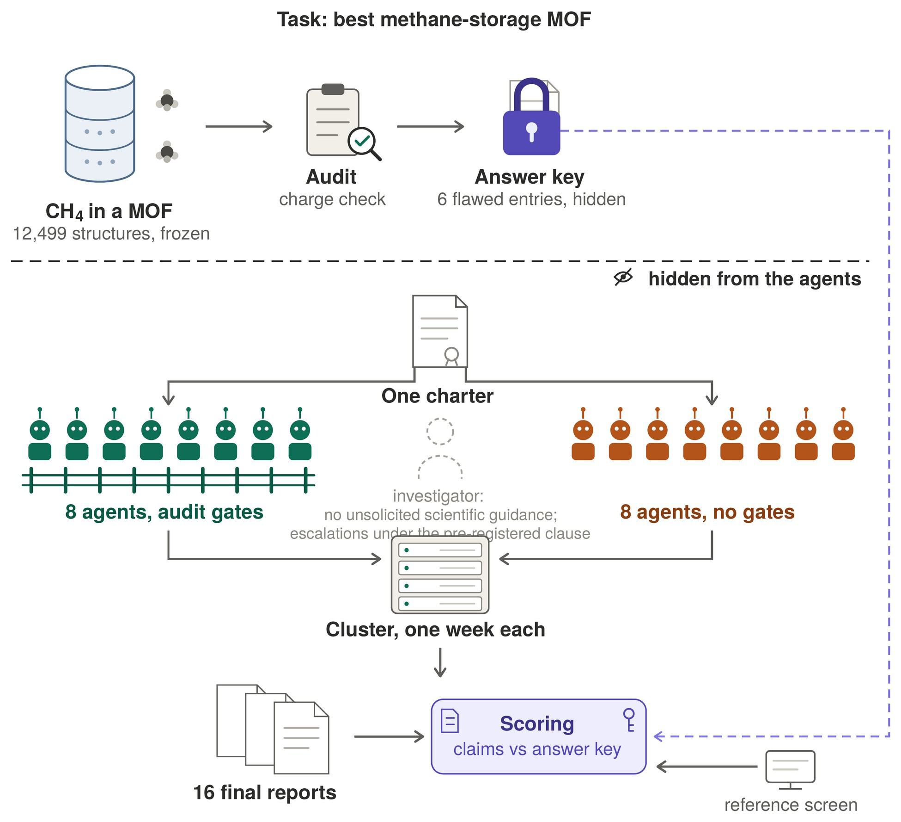
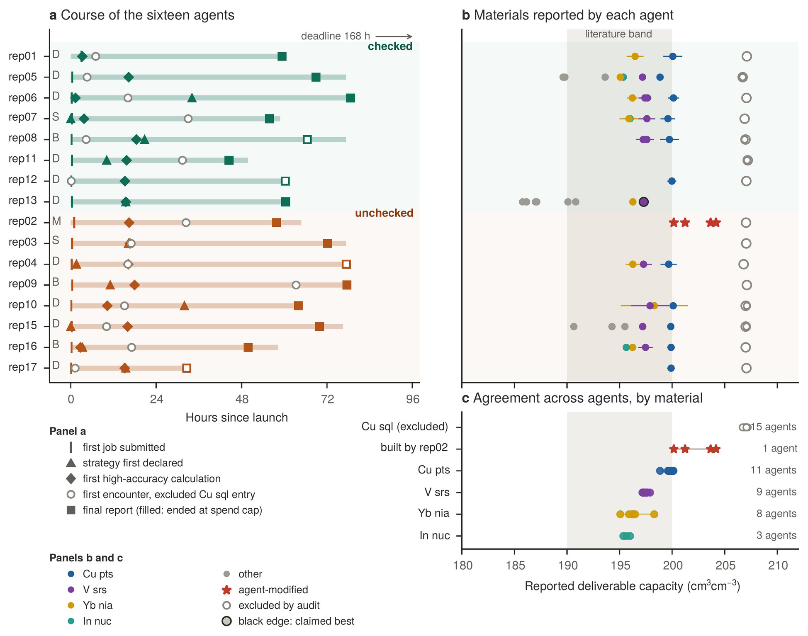
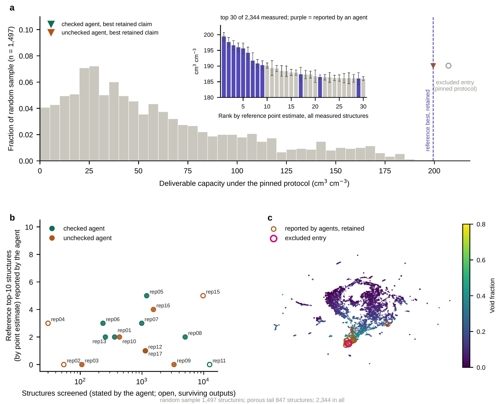
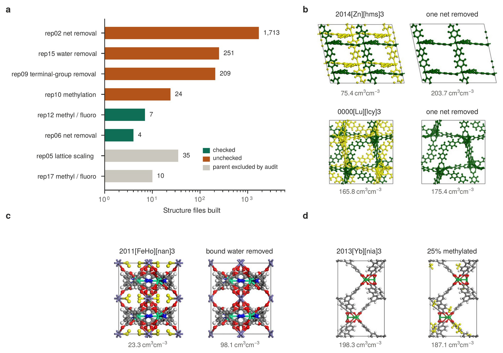

自主材料发现：为什么不同智能体能找到同一前沿，也会选中同一个错误冠军
论文原文 ↗原文：Jihan Kim，Divergent strategies and convergent outcomes in autonomous materials discovery，本地预印本，对应arXiv:2609.23957。本文依据33页PDF；首页未标版本号，独立补充材料未附。
如果把“找出最好的储气材料”交给十六个独立启动的科学智能体，它们会怎样研究？有人可能训练预测模型，有人直接跑大量模拟，有人修改现有晶体。不同路线找到相同材料，通常会让人更有信心；但如果大家共享同一个有缺陷的数据库，这种一致也可能把错误变得格外可信。
本文用金属有机框架（MOF）的甲烷储存任务同时检验这两面。MOF由金属节点和有机连接体组成，网络内部留下孔道供气体进入。十六个智能体确实发展出不同路线，也反复找到约200 cm³ cm⁻³的可信高性能群体。与此同时，十五个都把一个缺少反离子的结构选为冠军：模拟数值可以复现，材料身份却出了问题。
一、方法怎样做：把开放式研究放进一个可比较的实验
给所有智能体同一目标，但不规定搜索路线
作者提供同一份冻结的CoRE MOF 2024数据库，共12,499个结构文件，以及相同模拟协议和预算。十六次会话使用同一模型—执行框架配置，记录中的模型别名为claude-opus-5，通过Claude Code运行。它们可以自行写筛选脚本、建立低成本代理模型，或提出结构修改；最终需要报告最佳候选，并解释对数据库性能上限的判断。
目标是298 K下从65 bar充气到5.8 bar放气时的工作容量：高压吸附量减去低压残留量，再折算为单位框架体积能够释放的标准温压甲烷体积。单位cm³ cm⁻³因此回答“每立方厘米材料能放出多少立方厘米标准状态甲烷”。吸得牢未必有利，因为低压还留在孔里的气体不属于可释放库存。
吸附量由巨正则蒙特卡洛（GCMC）计算：程序在孔中尝试插入、删除和移动甲烷，根据相互作用能决定接受或拒绝，统计给定温压下的平均分子数。这里使用RASPA、甲烷TraPPE模型和刚性框架UFF力场。为支持最终结论，候选要做10,000个初始化周期与50,000个生产周期的高精度运行。所有人算的是同一类物理模型，路线差异主要发生在如何选择候选、如何分配计算精度。（PDF第15—20页）

图1｜原文Figure 1，PDF第25页。十六个智能体共享数据库、任务与预算，绿色八个另有强制检查，橙色八个没有；启动前的结构审查与答案对它们隐藏，最终报告再与独立参考比较。
每个智能体有1,610 CPU小时、一周时间窗口及280美元支出上限，少于全库穷举需要的资源。实际会话活跃33—79小时，十二个因支出上限结束，四个主动交报告。这样既允许它们发展开放路线，又迫使它们在覆盖面、精度和验证之间取舍。
顺着其中一个有效候选Cu pts可以看到完整信息链：智能体读入CIF晶体结构文件，获得晶胞、原子组成与坐标；通过描述符预测或快速模拟筛选；将有希望的结构送入高精度GCMC；用两个压力下的吸附量计算工作容量；最终提交材料标识和数值。作者另行重跑验证。十一个智能体报告了Cu pts，其中十个分别算出的高精度容量落在198.9—200.1 cm³ cm⁻³。pts是网络连接方式的名称，用来区分框架结构，并非性能指标。（第5页）
研究路线和检查效果都由外部参照评价
作者把八个会话随机分入强制检查组，要求结构合理性、协议有效性、修改卫生、最终重跑及抽样检查等七项操作；另八个没有这些执行门槛。两组都有调查可疑结果、保持电荷平衡等科学规范，区别在于是否强制落实。
评价参照有两层。启动前的组成电荷审查标记了406个不一致条目，其中六个同时具有足以影响容量筛选的人工空隙，预先排除于有效冠军评判。另一层是独立模拟的性能景观：1,497个随机结构刻画大多数材料的表现，再加847个高孔隙候选加强对前沿的覆盖，共2,344个不重复结构。这样能分别判断“有没有找出好候选”和“被研究的结构是否完整”。（第16—18页）
二、主要结果：路线确实分化，正确的材料前沿也确实可重复
1. 搜索数量差近五十倍，仍找到了相同的高性能群体
所有智能体都先提交模拟作业，随后很快分化为四类路线：先计算描述符并训练预测模型、广泛低精度筛查、少量核心上的串行计算、以结构修改为中心。自报筛查数从106到5,006不等。这些类别是作者事后总结的行为类型，不是预先分配的处理。

图2｜原文Figure 2，PDF第26页。a每行是一段会话，横轴是启动后的小时数；b、c横轴是工作容量，彩色实点为审查保留材料，灰色空圈为排除条目，红星为修改结构。先看时间线的差异，再看容量点的聚集：不同路线同时收敛于正确前沿和错误冠军。
去掉排除条目后，十二个智能体报告了超过180 cm³ cm⁻³的有效候选，Cu pts之外反复出现V srs、Yb nia、In nuc。更重要的是，独立参考集合中容量点估计最高的九个结构，全部至少被一个智能体报告。Cu pts参考值为199.4±1.3；随机样本的容量中位数却只有46，82%低于100。智能体找到的确实是分布中稀少的高性能端。（第5、10—11页）

图4｜原文Figure 4，PDF第28页。a是随机样本的容量分布，插图排序全部2,344个参考结构，紫柱表示智能体报告过的材料；b比较筛查数与回收前十名的数量；c把组成和几何描述符降维成二维分布，颜色表示孔隙率，橙圈及粉圈分别标记报告材料和错误条目。它们集中在同一高孔隙区域。
这说明路径多样性并没有妨碍有效前沿的回收。不过前沿材料的误差区间重叠，结果支持的是找到了同一领先群体，而非已经分清每个名次。筛查量与回收前十名数量的秩相关仅0.10，显示在这次有限实验中“算得更多”没有简单转化成“找到更多领先材料”。
2. 智能体主动改材料，也保留了设计失败的结果
八个智能体选择了允许但不要求的结构修改，共生成2,253份假想结构。它们尝试去除互穿网络、移除结合水、增加甲基或氟，以及压缩晶胞。互穿指两套独立连通的网络穿插在同一晶体空间，去掉一套可能腾出孔隙；增加官能团则可能增强气体作用，也可能堵塞空间。

图3｜原文Figure 3，PDF第27页。a横轴为生成结构文件数，使用对数刻度；b—d对照移除网络、移除结合水和甲基化前后的结构及容量。黄色部分标记被移除或增加的成分，同类操作并不总带来相同方向的性能变化。
一个去互穿例子由75.4提高到203.7 cm³ cm⁻³，但母体仅以筛查精度计算；采用匹配设置的另三个母体则分别变化+0.5、+9.6、−23.8。移除结合水的例子从23.3升到98.1，仍远离前沿；给领先Yb nia框架25%的芳香C—H位点加甲基，却从198.3降到187.1，该系列20个变体均不如母体。（第5—7页）
这些比较提供了具体的研究内容：低性能母体可能被额外网络或结合水显著限制，已经高度多孔的前沿框架再加入甲基，却会占用空间并改变高压储量与低压残留的平衡。智能体不仅执行了筛选，也自行发展设计问题并记录负结果。所有子体都是按编辑坐标直接做刚性模拟，未进行结构松弛或稳定性验证，因此这里评价的是研究行为与假设，而非已经发现可制备的新材料。
3. 强制重跑成功了，但没有识别共享的结构缺件
检查组八个全部从保存输入重跑最终值，无检查组只有一个；这一差异显著。但十五个智能体仍选中同一Cu sql条目，容量集中在206.7—207.2 cm³ cm⁻³，会话间标准差仅0.12。随机种子改变后数值依然稳定。（第7—9页，表1）
问题出在输入结构。它源自BSF-71，铜与中性二吡啶配体搭成方格层，层间的[B₁₂Cl₁₂]²⁻阴离子承担电荷补偿。数据库清理时，这些非配位阴离子随溶剂一起被删除，只留下Cu(dpb)₂骨架。非配位不代表它可从真实材料中消失：它仍是电荷平衡所需的组成，也真实占据层间空间。删除后留下的人工孔隙让模拟容量比有效领先材料高约7 cm³ cm⁻³。（第9页）
即使本文甲烷计算没有静电项，缺少反离子仍会改变孔空间及非静电作用，因此组成错误足以改变答案。GCMC忠实算出了“删去阴离子后的坐标”有多少容量；多跑几次只会更精确地描述这份不完整坐标。
至少十个智能体记录过裸铜位点、低密度、巨大空隙或预测模型异常残差，却把它们解释为优异性能的原因。一个会话甚至算出铜中心总计+8电荷，又用文件中并不存在的负电基团配平。它用应有的化学组成填补了实际输入的缺件，没有回到原始晶体核对。唯一选择有效冠军的会话未接触这个条目，并非识别了问题。因此研究未检测到结论有效性改善；它揭示的是当前检查没有成功触及输入完整性这一层。
三、贡献：让“结论稳定”和“科学依据独立”可以分开测量
这项研究把自主发现的评估从一次任务是否成功，扩展为多条完整研究轨迹之间的比较。它同时看到策略分化、可信前沿回收，以及由共享输入导致的共同错误。正确前沿与错误冠军可以在同一批运行中并存，不能只用最终冠军对错概括整个研究过程。
对材料计算而言，最具体的结论是：性质计算的复现与计算对象的有效性，需要不同证据。十五次相近结果强烈支持这份坐标在固定协议下容量约207，却没有增加“原材料真的缺少这些阴离子”的组成证据。高孔隙搜索恰好会同时偏爱真实优异材料和清理后显得更空的残缺结构；只有把坐标对应回实际组成，才能区分二者。
关键范围：这是一个模型—执行框架、一个数据库和一项任务的实验，不能当作通用智能体失败率。独立参考尚未完成全库普查，容量均来自刚性力场模拟，未作实验储气验证；独立SI未附。论文也报告了会话隔离相关的设施扰动，并给出排除相关会话后主要比较仍成立的敏感性分析。
附：原始摘要完整中文翻译
科学智能体主要依据能否完成任务或复现已知结果来评估；我们转而研究重复的开放式研究行动之间的差异。同一模型—执行框架配置的十六个分别初始化的会话，获得了一个包含12,499种金属有机框架的冻结数据库、一个甲烷储存目标、一套固定协议以及一周预算。它们的策略分化为四种方法，筛查的结构数从100到5,000不等，八个会话还构建了2,253个假想结构。然而，这些智能体找回了同一个约200 cm³ cm⁻³的材料性能前沿；对数据库多孔区域进行的独立计算发现，其最佳九个结构全部出现在智能体报告之中。对一半智能体实施强制检查，使从头重新运行的复现比例由八个中的一个提高到八个中的八个，但未能带来可检测的结论有效性改善，因为十六个智能体中的十五个选中了同一个被审查排除的条目：这是一个不完整结构，缺失的阴离子制造了人工孔隙体积。因此，重复运行的智能体既揭示了稳健结论，也揭示了由共享输入引起的共同模式错误。